Em conjunto com a WHIDO, lançamos uma live com um countdown de 10 dias no canal oficial do Gabigol no YouTube, deixando todos intrigados sobre o que aconteceria quando o cronômetro chegasse a 00:00:00:00. Houve muitas especulações, mas a ideia sempre foi anunciar o novo clube na virada do ano: uma ação inovadora pensada pela 4Content e pelo Gabigol, com a colaboração da WHIDO e do Cruzeiro.
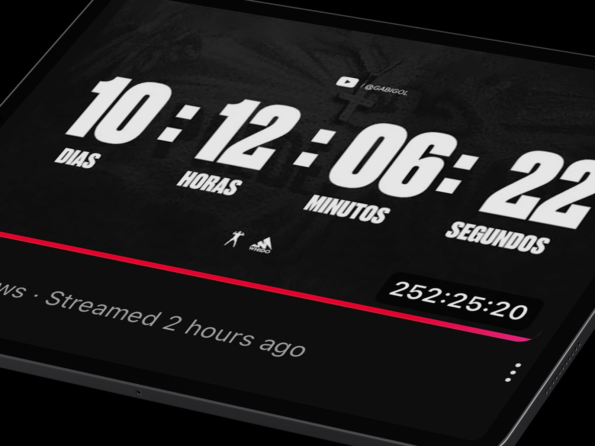
Na virada do ano, o canal do Gabigol no YouTube bateu 40.000 espectadores simultâneos, ansiosos pela revelação do novo clube — uma experiência imersiva que redefiniu a forma de anunciar uma contratação. Durante o ano novo, noticiários e redes costumam ser dominados por festas e fogos de artifício; neste ano foi diferente. O anúncio de Gabigol no Cruzeiro, feito no exato momento da virada, gerou um buzz sem precedentes.
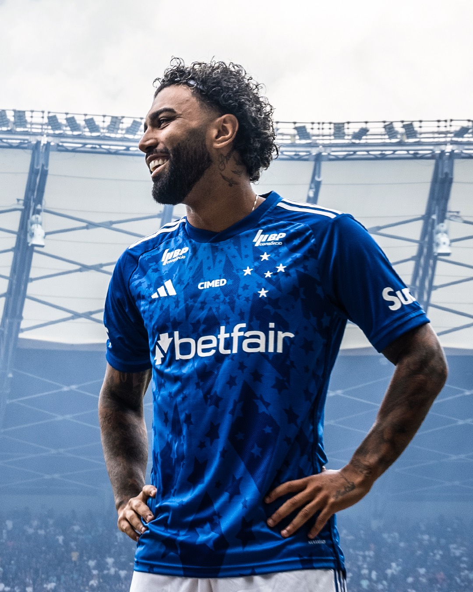
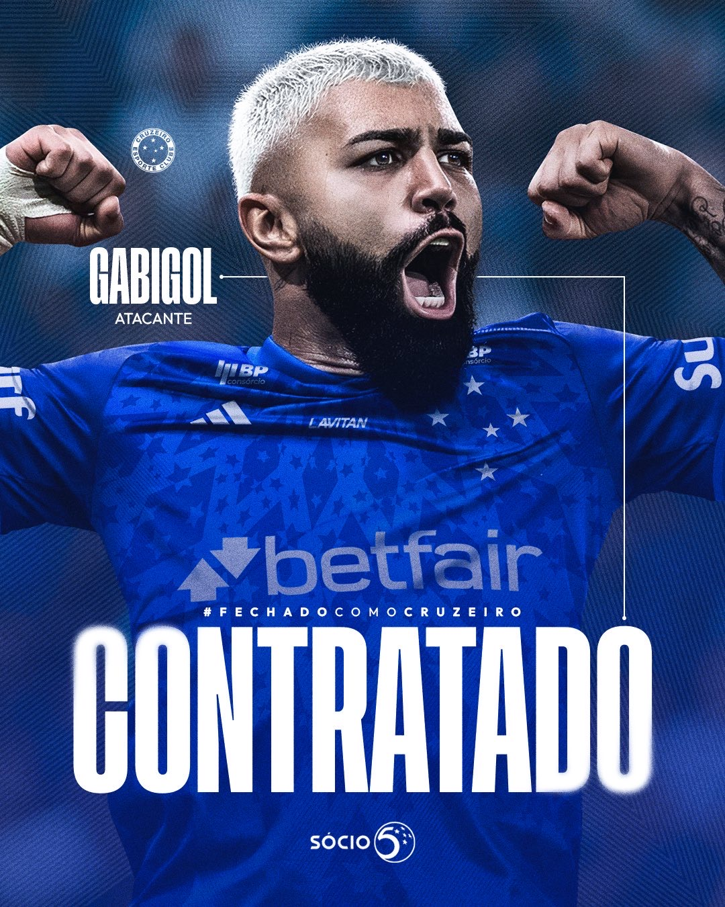
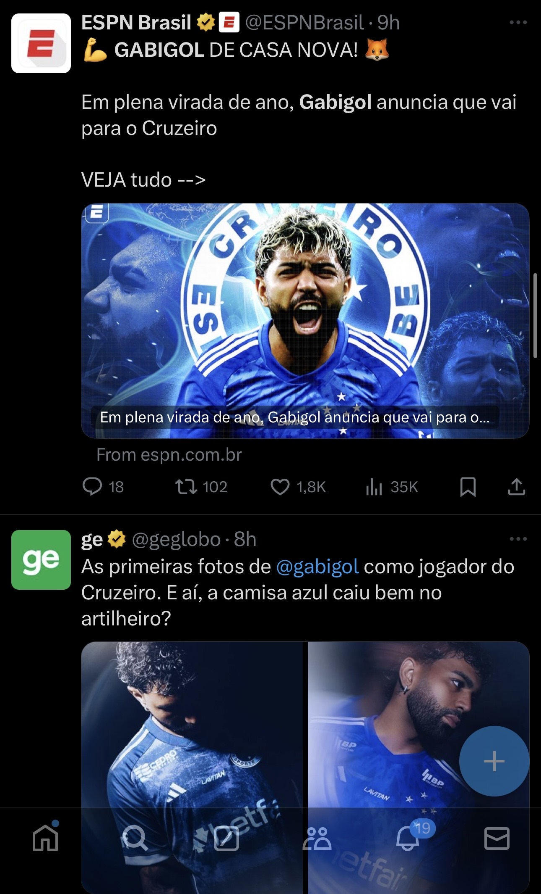
No dia 2 de janeiro de 2025, data em que o Cruzeiro completou 104 anos, diversas ações foram realizadas para celebrar com a torcida. Em parceria com a 4Content e a chegada do Gabigol, projeções mapeadas em quatro pontos estratégicos de Belo Horizonte exibiram a data da apresentação, o escudo do clube e a imagem da Raposa — de 18h à meia-noite do dia seguinte.
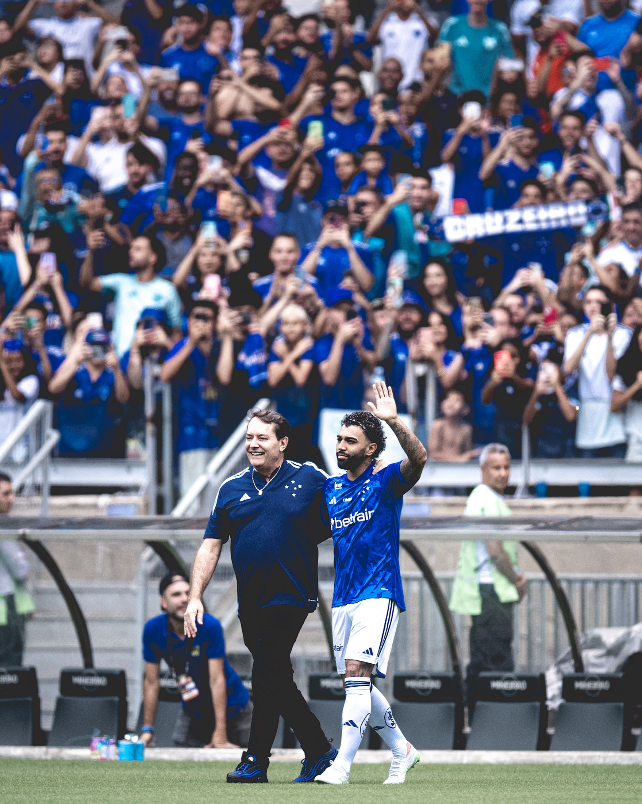
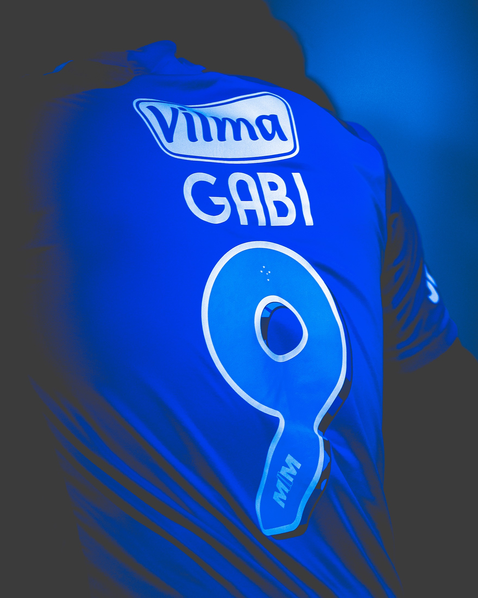
Em outra ação com a 4Content e Gabigol, o Cruzeiro anunciou que o artilheiro vestiria a camisa 9. Imediatamente após o anúncio do número, as vendas foram abertas, movimentando significativamente as lojas oficiais do clube em todo o país.
Gabigol, embaixador da Viva Sorte, recebeu uma homenagem especial em sua chegada a Belo Horizonte. Idealizada pela 4Content — produtora oficial da marca — em parceria com o Cruzeiro, a Viva Sorte convidou o artista Luan Ribeiro para criar um mural exclusivo na Toca da Raposa. O grafite, que levou dois dias para ser finalizado, já se tornou um ponto de encontro para os cruzeirenses e ficará exposto por pelo menos 90 dias.
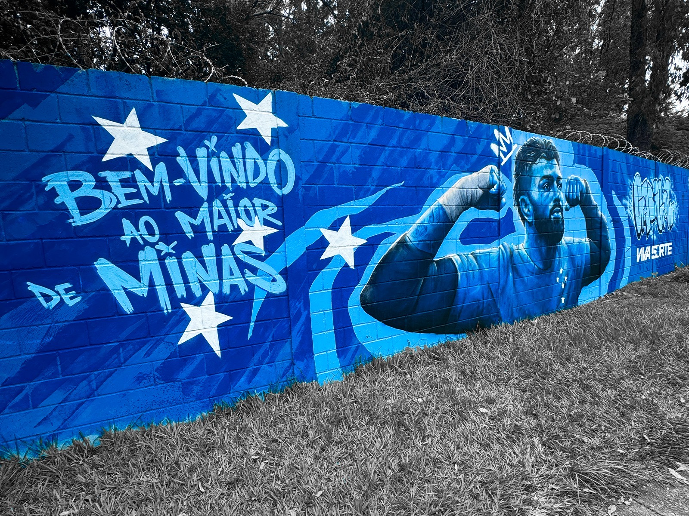
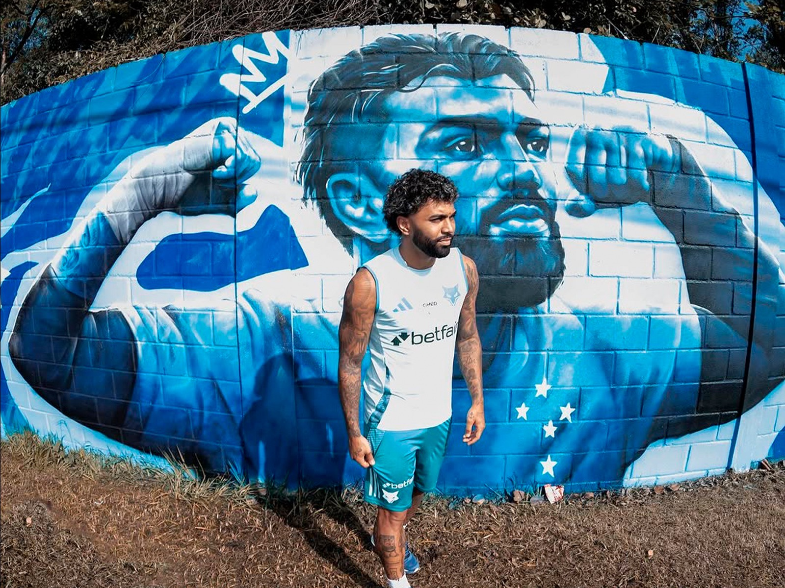
Com um público de 44 mil torcedores eufóricos, a apresentação de Gabigol no Mineirão quase superou o recorde de público para apresentação de jogador no Brasil. A repercussão midiática foi tão avassaladora que, nos primeiros meses do ano, o Cruzeiro se tornou o centro das atenções no cenário esportivo nacional, e só se falava de Gabigol e Cruzeiro.
O desafio: transformar a experiência offline em entretenimento digital. Criamos uma estratégia de comunicação para proporcionar a todos os torcedores uma imersão azul, com ativações em pontos estratégicos da cidade e repercussão nas mídias físicas e digitais — uma "febre azul" em torno do artilheiro.
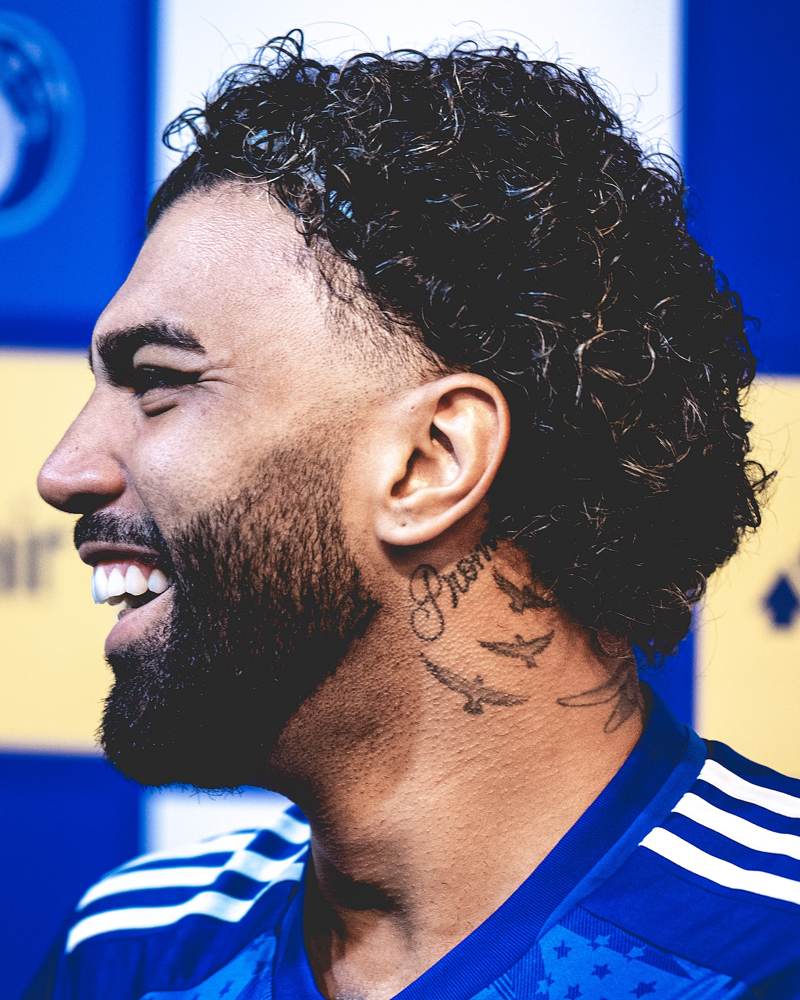
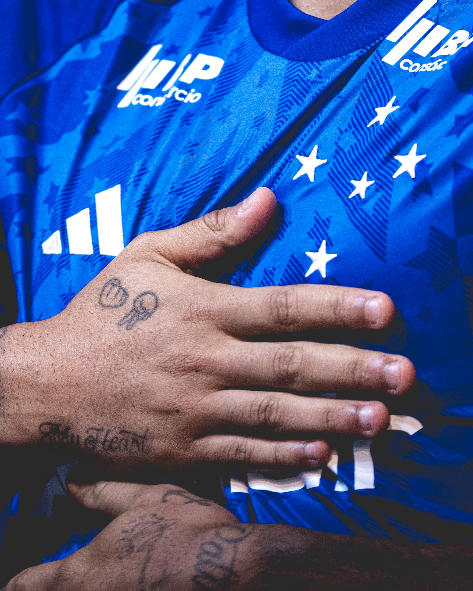
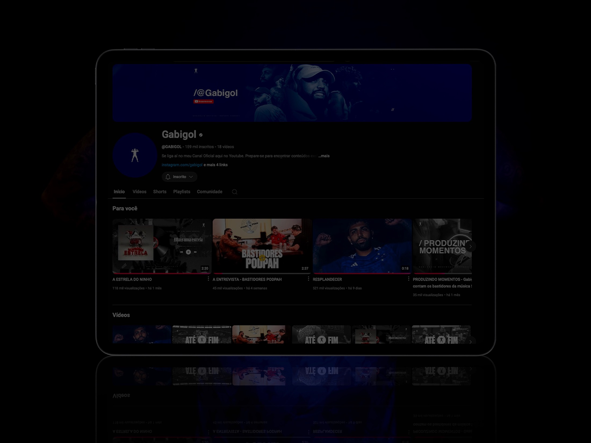